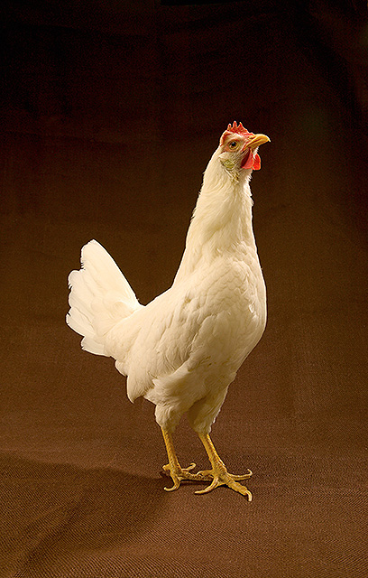
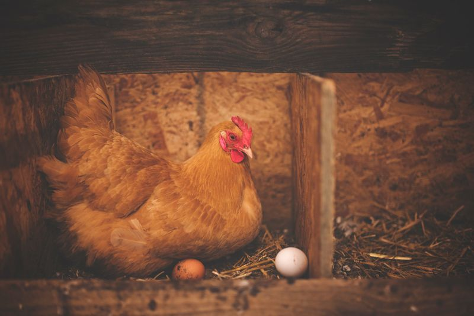
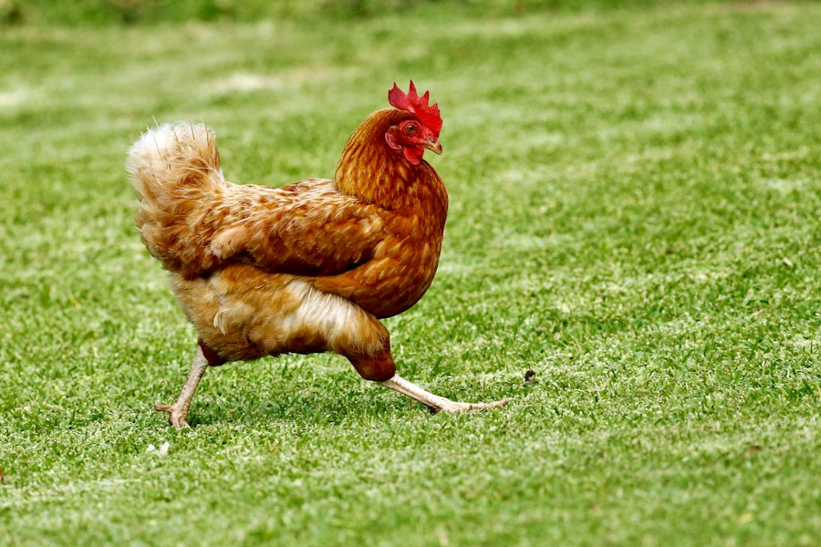

Leghorn cue
Sleek, upright body; eggs often a clean classic oval rather than a squat sphere.
Hens & their eggs
Pick a breed, see its egg. 36 laying breeds grouped by shell color, each with the traits you can spot in the run: comb, wattles, plumage, body, and legs.
Planning a colorful egg basket or just curious what your hens will lay? Start with color, then check shape and size.
Browse breeds by egg colorColor
Shell color comes from the hen, not from what she ate that week. Search or filter by egg-color family, then pick a breed to see her traits beside the egg she is known for — white, tinted, brown, dark chocolate, blue, or olive.
—
No breeds match that search or filter. Clear the search or choose All.
Shape
Most table eggs are gently oval: a blunt end and a slightly sharper tip. Breed and hen age nudge that silhouette. Sudden runs of very odd shapes can flag stress or health issues; everyday scatter is normal flock variation.

Sleek, upright body; eggs often a clean classic oval rather than a squat sphere.

Broad, low posture; shells can read a touch rounder beside the nest straw.

Medium dual-purpose frame; brown eggs usually sit in the everyday oval band.
Size
Carton names are weight per dozen. A Large egg is about two ounces. Light Mediterranean breeds such as White Leghorns often sit Medium–Large; heavier dual-purpose hens like Orpingtons and mature Rhode Island Reds push Large and Extra Large as they age.
Compact flighty layer; eggs often Medium–Large with thin white shells.
Medium dual-purpose frame; mature hens commonly Large brown eggs.
Heavy, broad body; tinted to light-brown eggs often Large–XL once mature.
Sources
Samiullah, S., Roberts, J. R., & Chousalkar, K. (2015). Eggshell color in brown-egg laying hens — a review. World’s Poultry Science Journal, 71(4). Covers protoporphyrin deposition on brown shells.
Lang, M. R., & Wells, J. W. (1981) and later shell-gland reviews: biliverdin (oocyan) tints the shell matrix earlier than surface brown pigment, so blue reads through the full thickness.
USDA Agricultural Marketing Service — United States Standards for Quality of Shell Eggs: size classes are minimum net weight per dozen (Peewee through Jumbo), not breed names.
Heritage breed context: The Livestock Conservancy priority lists (referenced via McMurray catalog notes).
Breed photos come from Wikimedia Commons (CC0, CC BY, CC BY-SA, or public domain), USDA ARS (public domain), Unsplash, and Pexels under their respective licenses. Each credit links to the original file.